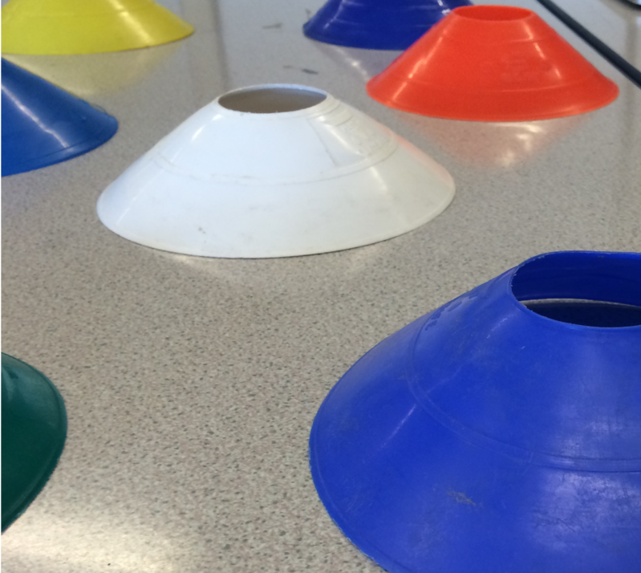
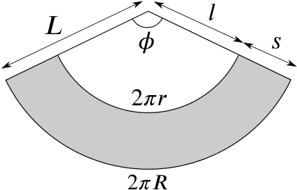
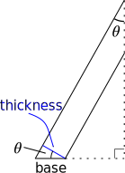

You may have used sports “cones” like these at school:

The mathematical name for a truncated cone such as this is a frustum of a cone.
What volume of plastic is needed to make such a “cone”?
Our chosen approach is to begin by finding the surface area of the frustum.
Once we have done this, if we know the thickness of the plastic, then a good estimate of the volume would be the surface area multiplied by the thickness. (This does not give the exact volume, but the error will be small in comparison to the error in measuring the thickness of the plastic.)
Therefore, to get a decent estimate of the volume of the “cone”, get a sports “cone”, measure various lengths, and use these to work out the surface area. Then estimate or measure the thickness and use these to work out the volume.
So let us return to the question of working out the surface area.
The images in the suggestions proposed thinking about a whole cone or about cutting the frustum open.
Throughout this solution, we’ve chosen to use algebra rather than actual measurements from a real “cone”. We will then put in our measurements at the end to arrive at a final numerical answer.
Why might we have done this?
It allows us to compare our algebra with someone else’s algebra
It allows us to see how changes in different measurements (or inaccuracies in them) will affect the final answer
It allows us to work out the surface area and volume of different sizes of frustums and “cones” without repeating the work
We begin by drawing a sketch of the frustum within a complete cone, as in the suggestion, and indicating a variety of lengths and angles on it.
With an actual sports “cone”, we can easily find r and R (by measuring the diameters and halving them) and s (by direct measurement). With a bit of effort, we can measure h (by holding a straight edge vertically and seeing where the top of the “cone” lies on it). None of the other lengths or angles are easy to measure directly, so we will have to work them out from r, R and s (or possibly h) as needed.
Here are two different routes to finding the surface area, based on the two ideas in the suggestions.
As in the suggestion and the above sketch, we can extend the sloping surface upwards to create a complete cone.
We can then find the surface area of the complete cone and subtract the surface area of the small cone to find the area of the frustum.
The Appendix to this resource discusses some formulae for finding the surface area of a cone, which we will make use of here.
The surface area of the whole cone is πRL, while the surface area of the small cone is πrl. Therefore the surface area A of the frustum is
A=πRL−πrl=π(RL−rl).(1)
This is good, but we still have to find L and l in terms of r, R and s.
Looking at the diagram, we see that we have two similar right-angled triangles with one vertex at the apex of the cone. We can use these to find that:
LR=lr.(2)
We would like to combine these together to obtain a formula for the area in terms of R, r and s. To do this, we will also need to use a formula for s:
s=L−l,(3)
which is obvious from the above diagram.
If we cut a cone open, we get a sector of a circle. If we do the same with a frustum, we get the shaded region in the following diagram, which is a sector of an annulus.

The outer arc is the unwrapped base of the frustum, so has length 2πR, while the inner arc is the unwrapped top of the frustum, so has length 2πr.
The radius of the inner circle is the slant length of the upper part of the cone (which is cut off to make the frustum), and similarly for the radius of the outer circle, giving the lengths as shown. We also let ϕ be the angle of the sector.
Then using the formula for area of a sector (“A=12r2θ”), we see that the curved surface area of the frustum, which is the shaded area, is
A=12L2ϕ−12l2ϕ.
We need to eliminate ϕ, as we cannot measure this angle on the physical “cone”. We can use the formula for arc length (“l=rθ”) to find ϕ, as we know the length of the outer and inner arcs. So we obtain
2πr=lϕand2πR=Lϕ.
This gives ϕ=2πrl=2πRL, and so we also get the useful incidental result that
rl=RL.(4)
(We could also have deduced this by using similar triangles as in the first route, or by noting that the inner and outer sectors in the unwrapped frustum are similar.)
Now, substituting our formulae for ϕ into our formula for the shaded area gives:
A=12L2ϕ−12l2ϕ=12L2.2πRL−12l2.2πrl=πLR−πlr
so that
A=πRL−πrl=π(RL−rl).(5)
We would like to combine this together with (4) to obtain a formula for the area in terms of R, r and s. To do this, we will also need to use a formula for s:
s=L−l,(6)
which is obvious from the first diagram above.
We have equation (1) or (5) for the area A in terms of R, r, L and l, and we will need to use equations (2) and (3) or (4) and (6) to obtain a formula for A in terms of R, r and s.
One approach is to rearrange equation (2) or (4) to obtain l in terms of r, R and s, and then to substitute this into (3) or (6) and rearrange to obtain an expression for L in terms of r, R and s. We could then use (2) or (4) again to obtain a similar formula for l. Substituting these into our formula for A will give us the answer we seek.
But there is a nicer approach, though it is not that obvious.
relating RL and rl, while equation (2), which reads LR=lr, can be rearranged to get
rL=Rl.(7)
(Equation (4) can be rearranged to give this same result.)
It would have been lovely if this equation had related RL and rl, which are what we are interested in, but unfortunately it does not.
However, the terms do have the same “shape”: they all involve R or r multiplied by L or l. This might make us think of quadratic expressions of the form
(R±r)(L±l).
Since we want to end up with RL−rl for the area formula, we need one positive sign and one negative sign. Furthermore, as we know that s=L−l (equation (3) or (6)), we’ll go for
(R+r)(L−l)=RL+rL−Rl−rl.
The middle two terms cancel each other out by equation (7), so this equation simplifies to
(R+r)s=RL−rl.
Therefore we get our desired formula:
A=π(R+r)s.(8)
Finally, if we want to write our answer in terms of h instead of s, we can use Pythagoras’s Theorem to get s2=(R−r)2+h2, giving us A=π(R+r)(R−r)2+h2⎯⎯⎯⎯⎯⎯⎯⎯⎯⎯⎯⎯⎯⎯⎯⎯⎯⎯⎯⎯⎯√. The other version certainly looks simpler!
This answer can also be written as A=2π(R+r2)s, which is the curved surface area of a cylinder with radius R+r2 (the average of the top and bottom radii of the frustum) and height s.
This sounds like it might be interesting, if we can figure out what it means. Can you see why this should be the case?
The answer we obtained was in terms of R, r and s. It might also be useful also to have an answer in terms of θ but not s. How can we rewrite it?
Looking at the sketch of the frustum at the start of this solution, we see that we can write h=scosθ and R−r=ssinθ. Therefore we can rewrite (8) in two different ways to get
A=π(R+r)hcosθ=π(R+r)hsecθ
and
A=π(R+r)(R−r)sinθ=π(R2−r2)sinθ=π(R2−r2)cosecθ.
How can we check that our answer is sensible?
Try special values.
We know the slanted surface area of a complete cone from the Appendix, so if we put r=0, we should get the same answer. And sure enough, when we do so, we get π(R+0)s=πRs as expected.
Another special case is if R and r are almost the same and the slant is almost vertical, so the that the frustum looks more like a cylinder. In that case, s≈h and R≈r, so the area is approximately π(r+r)h=2πrh. This is the surface area of a cylinder, which is another good check.
Check the dimensions.
Again, we are looking for an area, which has dimension[L2].
The right hand side is π, which is dimensionless, times R+r, which is the sum of two lengths, so is a length, times s, which is a length, giving dimension [L]×[L]=[L2] as we require.
Put some numbers in and consider whether the answer is realistic.
A frustum with a small slant and small top radius (r) should have an area a bit less than a square which surrounds the base of the cone. Put in some numbers and see whether this is the case.
What volume of plastic is needed to make such a “cone”?
We measured a real “cone” and obtained the following measurements:
base diameter: 19.1cm (outer rim), 18.7cm (inner rim), so base radius: 9.55cm (outer rim), 9.35cm (inner rim)
top diameter between 6.0cm and 6.3cm – it was not exactly circular – so top radius approximately 3.1cm
slant length: 8.4cm
So the surface area is approximately π(9.45+3.15)×8.4cm2=331cm2. The base width is 0.2cm (the difference between the outer and inner rim base radii: the “cone” sits on a flat edge at its base). This sketch shows the base of the “cone” and part of the sloping side, and shows how we can estimate the thickness from the base:

We see that thickness=base×cosθ, so we need to work out θ. We see from the earlier diagram that R−r=ssinθ, so our figures give, approximately, 9.45−3.1=8.4sinθ, so θ≈49∘. Thus the thickness is approximately 0.2cm×cos49∘=0.13cm.
Thus the volume is approximately 331cm2×0.13cm≈40cm3 to 1 significant figure. The most difficult part of the measurement was measuring or estimating the thickness of the “cone”, and even our final answer may be quite inaccurate if it turns out that the actual thickness is 0.16cm or 0.10cm, say. We may have done better to use calipers to measure the thickness, instead of trying to calculate it using the base width and trigonometry. We were also not helped by the “cone” turning out to be not exactly the shape we first thought it was, but this is probably much less significant.
If we think now of some of the other possible approaches, it seems that approaches (3) or (4) would be much more accurate. But at least we have worked out how to find the surface area of a frustum along the way!